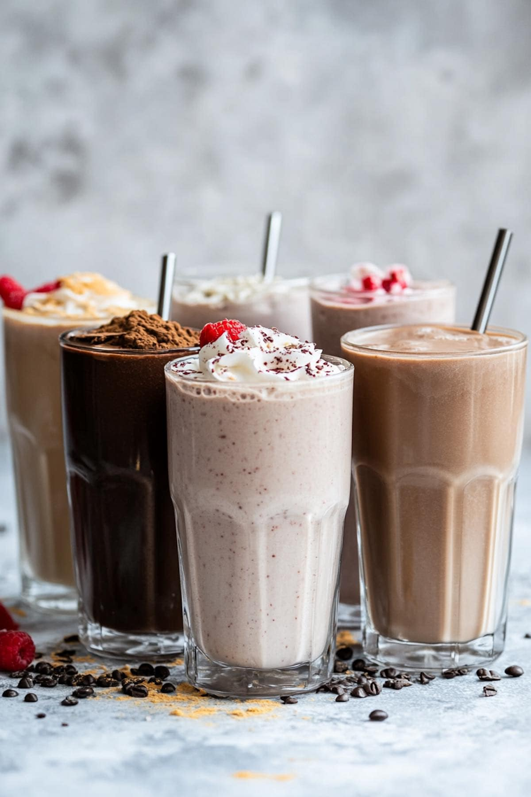

PROTEIN SHAKE
List of ingredients for 300ml shake -:
- Skimmed milk - 180 g
- Whey protein powder - 30 g
- Banana - 50 g
- Roasted oats - 15 g
- Peanut butter - 8 g
- Almonds - 3 g
- Cinnamon powder - 0.5 g
- Ice cubes - 30 g
Follow the follwing steps-:
- Add 15 g roasted oats to a blender and pulse for 10-15 seconds.
"Grinding the oats first prevents a grainy texture."
- Add 180 g chilled skimmed milk.
"Keep the milk cold so you need less ice and retain a thicker texture."
- Add 50 g banana and 8 g peanut butter.
"Use a ripe banana for natural sweetness instead of adding sugar."
- Add 30 g whey protein powder and 0.5 g cinnamon powder.
"Add whey after the liquid ingredients to reduce powder sticking to the blender."
- Add 3 g almonds and 30 g ice cubes.
"You can skip the almonds if you want a smoother shake and slightly fewer calories."
- Blend for 30-45 seconds until completely smooth.
"If the shake becomes too thick, add 10-20 ml cold water and blend again."
- Pour into a glass and serve immediately.
"For the best taste and texture, consume the shake soon after preparation."
watch this youtube tutorial
Home